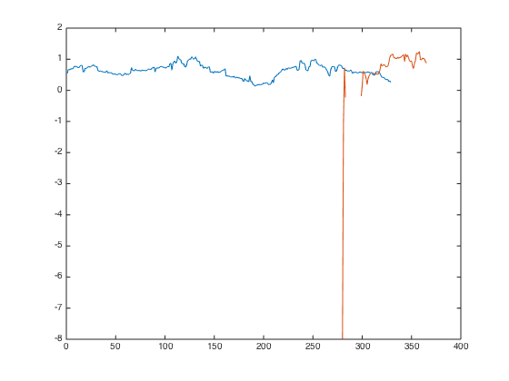
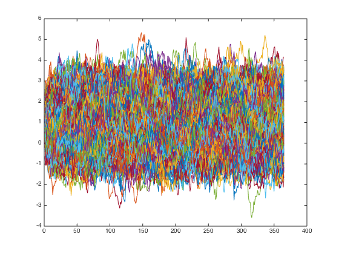
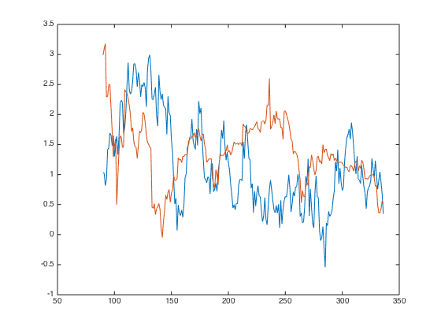

nion
nionMultiple Factors - Sanity Check
Multiple Factors - Sanity Check
I have been working on Multiple factors for 5 days, it's time to do some sanity check.
Contents
All my signal came from the ranking of fundamental observations. I then proceed to use those observations' rank (score_ts) to generate the portfolio weight. score_ts is normalized between [-1 1].
If I replace those signal with randomness, I shall expected:
- The long only equal weighted portfolio would be very similar to equal weighted portfolio. There should be no significant sharpe improvement as I observed with MOM.
- The longshort factor portfolio would be rather flat.
- Risk adjusted factor portflio would have zero correlation with benchmark, as there is no 'other type of risk' besides market risk.
If any of the above is not true, let's panic!
Generate Random score_ts
I want to preserve the data availability, i.e. if there is data in the original score_ts, there is data in the random one, likewise for NANs. Let's see how I can do this.
Let's load the data from ..
load('../data_equity_list_us.mat'); load('../data_field_list.mat'); load('../data_historical_data_us.mat');
take data sample, load data & the list
index = datasample(1:1300,1000,'Replace',false);
px = fun_load_price(history_us, equity_list_us, index);
px = fun_clean_data(px);
list = equity_list_us(index,:);
calculate Beta
beta_ts = fun_load_observations(history_us, equity_list_us, index,'beta');
give me the score, please
score_beta_ts = fun_calculate_score(beta_ts,list,'sectorsort',px);
Raccoon for Prince
this is the usual procedures. Let's try shuffle beta_ts.
beta_mat = fts2mat(beta_ts); beta_mat_shuffle = beta_mat(:,datasample(1:1000,1000,'Replace',false)); plot(beta_mat(:,100)); hold on; plot(beta_mat_shuffle(:,100)); hold off; snapnow;
the problem with this method is, I can't really perseve the data availability. let's see if there is another way. Maybe I shall work on the score_ts itself?
plot(fts2mat(score_beta_ts.X0203524DUSEquityNATIONALSEMICONDUCTORCORP)); snapnow;

let's start by generating peudo beta, which is mean reverting to 1. dx = theta*(mu - x)dt + sigma*dW
theta = 0.05; sigma = 0.3; beta_peudo(1,:) = normrnd(1,0.5,1,1000); i = 1; while i<=364 d_beta = theta*(1-beta_peudo(i,:))+normrnd(0,sigma,1,1000); i=i+1; beta_peudo(i,:) = beta_peudo(i-1,:) + d_beta; end plot(beta_peudo); snapnow;
not perfect, but this should work.
beta_peudo(isnan(beta_mat)) = nan; plot(beta_peudo(:,170)); hold on; plot(beta_mat(:,170)); hold off; snapnow;
at least I got the data availability right. raccoon for prince...
name = fieldnames(beta_ts); beta_ts = fints(beta_ts.dates, beta_peudo, name(4:end));
calculate the score
score_beta_ts = fun_calculate_score(beta_ts,list,'sectorsort',px);
Result with Randomn
weight * return
portfolio_weight_ts = fun_portfolio_weight_sector_neutral(score_beta_ts,'longonly'); portfolio_longonly_rt_ts = fun_portfolio_return(px, portfolio_weight_ts); portfolio_weight_ts = fun_portfolio_weight_sector_neutral(score_beta_ts,'equalweight'); portfolio_equalweight_rt_ts = fun_portfolio_return(px, portfolio_weight_ts); plot(cumsum(portfolio_longonly_rt_ts)); legend('off'); hold on; plot(cumsum(portfolio_equalweight_rt_ts)); legend('off'); [sqrt(12)*sharpe(fts2mat(portfolio_longonly_rt_ts(50:end)),0) sqrt(12)*sharpe(fts2mat(portfolio_equalweight_rt_ts(50:end)),0)] snapnow; hold off;
ans =
0.5256 0.5574

Sequential
give me my benchmark
portfolio_weight_eq_weight_ts = fun_portfolio_weight_sector_neutral(score_beta_ts,'equalweight'); portfolio_rt_ts = fun_portfolio_return(px, portfolio_weight_eq_weight_ts); benchmark = [100; 100*exp(fts2mat(cumsum(portfolio_rt_ts)))]; benchmark_ts = fints(px.dates, benchmark,'EqualWeightIndex'); plot(log(benchmark_ts)); legend('off'); hold on;

let's rock
portfolio_weight_ts = fun_portfolio_weight_sector_neutral(score_beta_ts,'topmlongonly',1); portfolio_cap_ts = fun_sequential_backtest_autoadjust(100, px, benchmark_ts, portfolio_weight_ts,false); plot(log(portfolio_cap_ts)); legend('off'); sqrt(12)*sharpe(fts2mat(tick2ret(portfolio_cap_ts)),0) corrcoef(fts2mat(tick2ret(portfolio_cap_ts)), fts2mat(tick2ret(benchmark_ts))) portfolio_weight_ts = fun_portfolio_weight_sector_neutral(score_beta_ts,'longonly'); portfolio_cap_ts = fun_sequential_backtest_autoadjust(100, px, benchmark_ts, portfolio_weight_ts,false); plot(log(portfolio_cap_ts)); legend('off'); sqrt(12)*sharpe(fts2mat(tick2ret(portfolio_cap_ts)),0) corrcoef(fts2mat(tick2ret(portfolio_cap_ts)), fts2mat(tick2ret(benchmark_ts))) portfolio_weight_ts = fun_portfolio_weight_sector_neutral(score_beta_ts,'topmlongonly',0.1); portfolio_cap_ts = fun_sequential_backtest_autoadjust(100, px, benchmark_ts, portfolio_weight_ts,false); plot(log(portfolio_cap_ts)); legend('off'); sqrt(12)*sharpe(fts2mat(tick2ret(portfolio_cap_ts)),0) corrcoef(fts2mat(tick2ret(portfolio_cap_ts)), fts2mat(tick2ret(benchmark_ts))) portfolio_weight_ts = fun_portfolio_weight_sector_neutral(score_beta_ts,'longonly'); portfolio_cap_ts = fun_sequential_backtest_partial(100, px, benchmark_ts, 1, portfolio_weight_ts,false); plot(log(portfolio_cap_ts)); legend('off'); sqrt(12)*sharpe(fts2mat(tick2ret(portfolio_cap_ts)),0) corrcoef(fts2mat(tick2ret(portfolio_cap_ts)), fts2mat(tick2ret(benchmark_ts))) hold off; snapnow;
ans =
-0.2970
ans =
1.0000 0.0462
0.0462 1.0000
ans =
-0.2915
ans =
1.0000 0.0026
0.0026 1.0000
ans =
0.0071
ans =
1.0000 -0.2226
-0.2226 1.0000
ans =
-0.2852
ans =
1.0000 0.0240
0.0240 1.0000

flat as a pan, and close to 0 correlation with benchmark.
imshow('dontpanic.png');